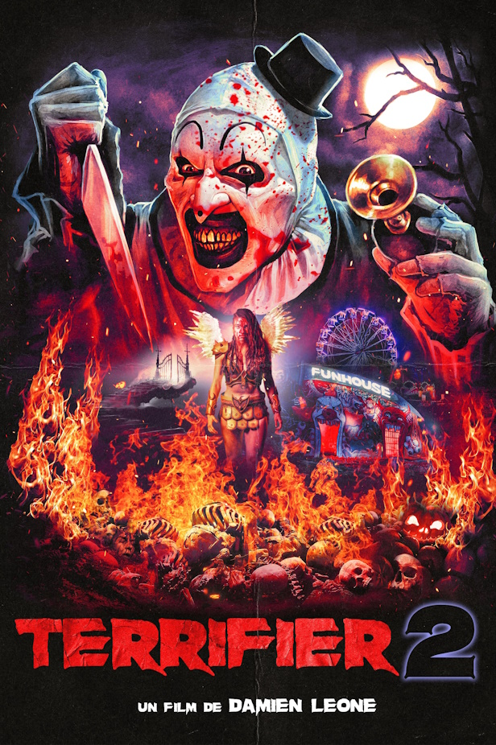

Terrifier 2 (2023) HD | HORREUR

Clown Art est ressuscité à la morgue par une entité mystérieuse et sinistre. Un an plus tard, le soir d'Halloween, le psychopathe déguisé revient dans le comté de Miles. Une fois sur place il décide d'attaquer Sienna Shaw, une adolescente, et Jonathan, son jeune frère. Le défunt père des deux cibles leur avait en effet légué un livre de croquis plein d'images prémonitoires sur l'avenir de Clown Art.